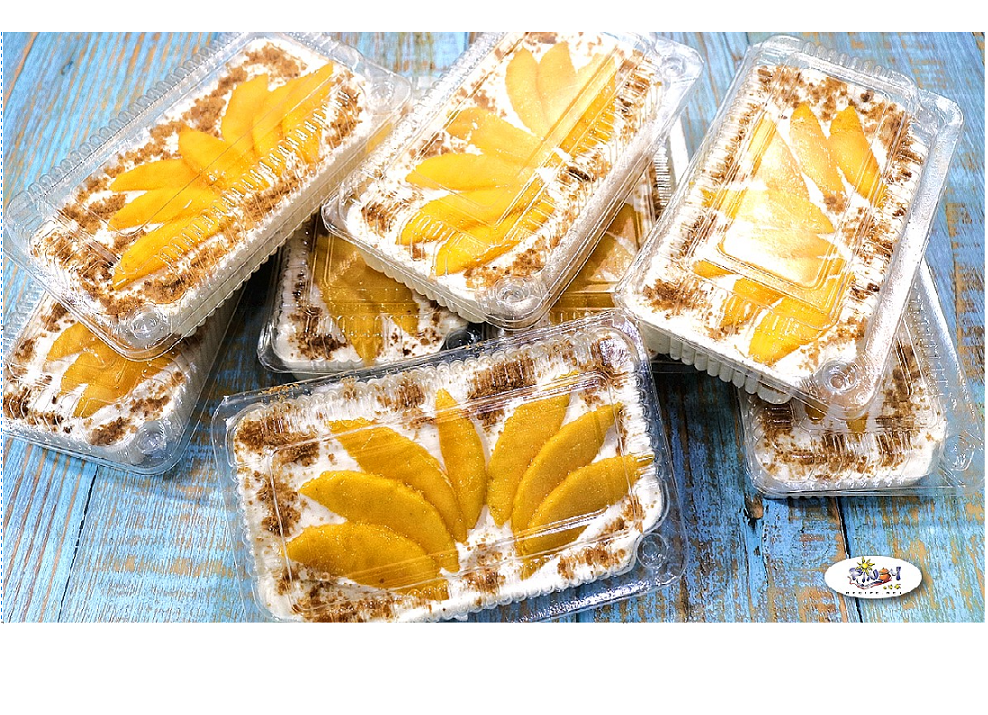

Manggo Float

Ingredients:
- 5 manggos
- 4 cups heavy cream
- 1 can sweetend condinsed milk
- 2 teaspoons vanilla extract
- 1/2 teaspoon kosher salt
- 21 graham crackers
Instructions
- Mix cream: combined condinsed milk,Evaporate milk heavy cream, and optional yogurt and vanilla in a bowl.
- Layer: In a dish, alternate layers of graham crackers, mango slices, and the cream mixture. Repeat layers and finish with cream on top.
- Serve: Garnish with extra mango slices and mint leaves if desired.
RETURN HOME